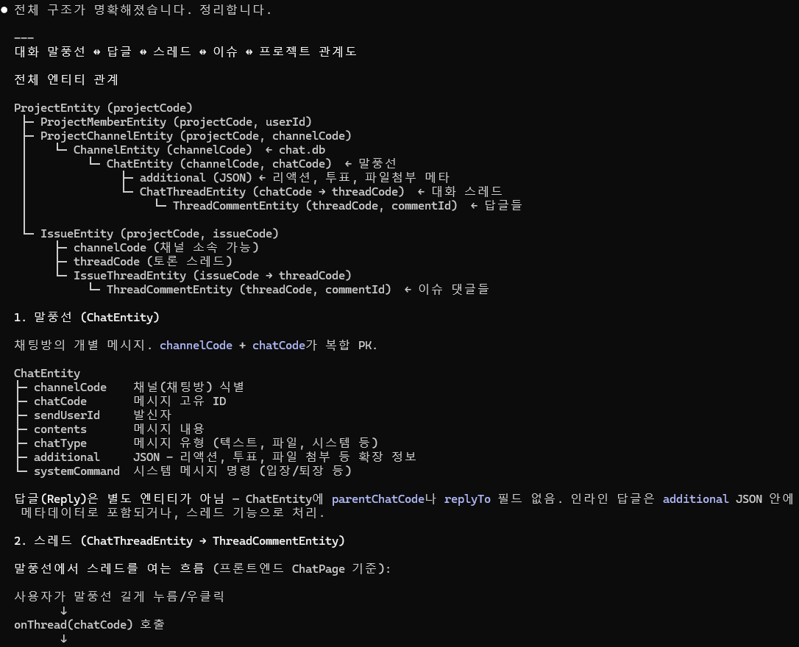
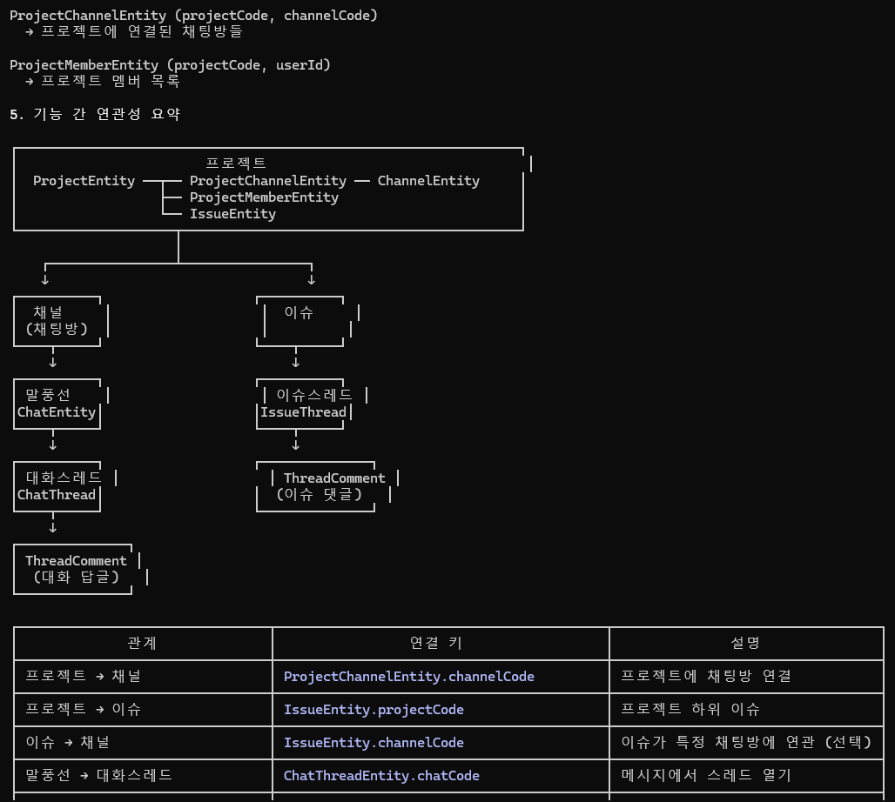

Data: DB 개요 & ER 다이어그램
6개 SQLCipher-encrypted Room 데이터베이스의 개요, 전체 엔티티 관계, 주요 FK 매핑을 정리합니다. 각 DB별 Entity/DAO 상세는 좌측 Data 메뉴에서.
1. DB 7종 (사용자별 분리)
| DB | 파일 패턴 | 엔티티 개수 | 주요 엔티티 |
|---|---|---|---|
| common | common.db (글로벌) | 2 | CommonEntity, SyncMetaEntity |
| org | org_{userId}.db | 3 | DeptEntity, UserEntity, BuddyEntity |
| chat | chat_{userId}.db | 5 | ChannelEntity, ChannelMember, ChannelOffset, ChatEntity, ChatEventEntity |
| message | message_{userId}.db | 3 | MessageEntity, AttachEntity, MessageEventEntity |
| noti | noti_{userId}.db | 2 | NotiEntity, NotiEventEntity |
| setting | setting_{userId}.db | 1 | SettingEntity |
| project | project_{userId}.db | 8 | ProjectEntity, IssueEntity, ChatThreadEntity, ThreadCommentEntity 등 |
2. 전체 ER 다이어그램 (핵심 관계)
말풍선(Chat) → 채널(Channel) → 프로젝트(Project) → 이슈(Issue) → 스레드(Thread) → 답글(Comment)의 계층적 관계도입니다.
erDiagram
ProjectEntity ||--o{ ProjectMemberEntity : has
ProjectEntity ||--o{ ProjectChannelEntity : links
ProjectEntity ||--o{ IssueEntity : contains
ProjectChannelEntity }o--|| ChannelEntity : "channelCode"
ChannelEntity ||--o{ ChannelMemberEntity : has
ChannelEntity ||--o{ ChatEntity : contains
ChannelEntity ||--o{ ChannelOffsetEntity : tracks
ChatEntity ||--o{ ChatThreadEntity : "chatCode"
ChatThreadEntity ||--o{ ThreadCommentEntity : "threadCode"
IssueEntity ||--o| IssueThreadEntity : "issueCode"
IssueThreadEntity ||--o{ ThreadCommentEntity : "threadCode"
IssueEntity }o--o| ChannelEntity : "channelCode (선택)"
ProjectEntity {
string projectCode PK
string projectName
string projectStatus
string ownerUserId
long deadline
}
ChannelEntity {
string channelCode PK
string channelName
string channelType
long lastChatDate
int unreadCount
}
ChatEntity {
string channelCode PK "FK to Channel"
string chatCode PK
string sendUserId
string contents
long sendDate
int chatType
string additional "JSON: 리액션/투표/파일"
}
ChatThreadEntity {
string chatCode PK "FK to Chat"
string threadCode PK
string channelCode
int commentCount
}
IssueEntity {
string issueCode PK
string projectCode "FK to Project"
string channelCode "FK to Channel (선택)"
string title
string issueType
string issueStatus
string priority
string threadCode "FK to Thread"
}
IssueThreadEntity {
string issueCode PK "FK to Issue"
string threadCode PK
}
ThreadCommentEntity {
int commentId PK
string threadCode "FK (Chat or Issue Thread)"
string userId
string contents
}

3. 관계 요약 (원본 j.png 기준)
| 관계 | 연결 키 | 설명 |
|---|---|---|
| 프로젝트 → 채널 | ProjectChannelEntity.channelCode | 프로젝트에 채팅방 연결 |
| 프로젝트 → 이슈 | IssueEntity.projectCode | 프로젝트 하위 이슈 |
| 이슈 → 채널 | IssueEntity.channelCode | 이슈가 특정 채팅방에 연관 (선택) |
| 말풍선 → 대화스레드 | ChatThreadEntity.chatCode | 메시지에서 스레드 열기 |
| 이슈 → 이슈스레드 | IssueThreadEntity.issueCode → threadCode | 이슈 토론 (자동 생성) |
| 대화스레드 / 이슈스레드 → 답글 | ThreadCommentEntity.threadCode | 동일 댓글 테이블 공유 |
핵심 포인트
스레드(Thread)가 공통 허브입니다. 대화 답글이든 이슈 댓글이든 모두
"답글 ≠ Reply-to-message": 이 앱의 "답글"은 특정 메시지를 인용하는 인라인 답글이 아니라, 스레드 패널에서 대화하는 형태입니다. Slack의 스레드와 유사한 모델.
스레드(Thread)가 공통 허브입니다. 대화 답글이든 이슈 댓글이든 모두
ThreadCommentEntity로 처리되고,
threadCode만 다르고 구조는 동일합니다.
"답글 ≠ Reply-to-message": 이 앱의 "답글"은 특정 메시지를 인용하는 인라인 답글이 아니라, 스레드 패널에서 대화하는 형태입니다. Slack의 스레드와 유사한 모델.

4. 공통 패턴
4-1. 복합 PK 예시 (ChatEntity)
@Entity(
tableName = "chats",
primaryKeys = ["channelCode", "chatCode"],
indices = [
Index("channelCode"),
Index(value = ["channelCode", "sendDate"])
]
)
data class ChatEntity(...)4-2. JSON 필드 (additional)
몇몇 Entity는 확장 메타를 additional 컬럼에 JSON 문자열로 저장합니다:
ChatEntity.additional— 리액션/투표/파일 첨부 메타ChannelEntity.additional— 채널 설정MessageEntity.additional— 쪽지 메타
파싱은 런타임에 JSONObject(entity.additional)으로 처리.
4-3. Offset / Event 테이블
대부분의 도메인은 <name>Entity(본체) + <name>EventEntity(이벤트 로그) 쌍으로 구성:
chat.db:ChatEntity+ChatEventEntitymessage.db:MessageEntity+MessageEventEntitynoti.db:NotiEntity+NotiEventEntity
Event 테이블은 Push로 들어오는 CRUD 이벤트를 저장해 React로 전달하기 위한 임시 버퍼 역할도 함.
4-4. SyncMeta
각 DB마다 SyncMetaEntity가 있어 마지막 sync 시점({domain}_last_sync_time)을 저장합니다.
project.db는 ProjectSyncMetaEntity로 별도.